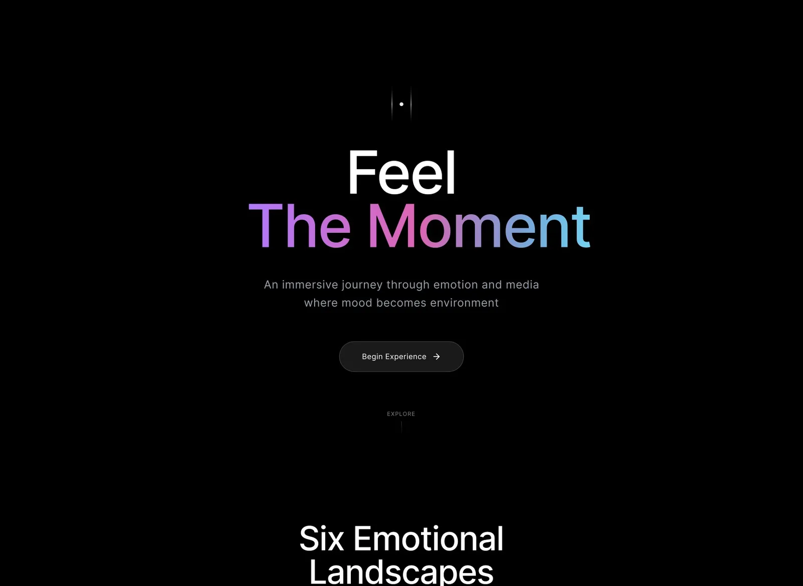
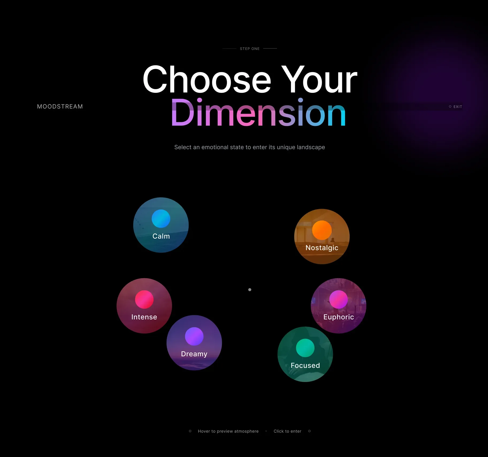
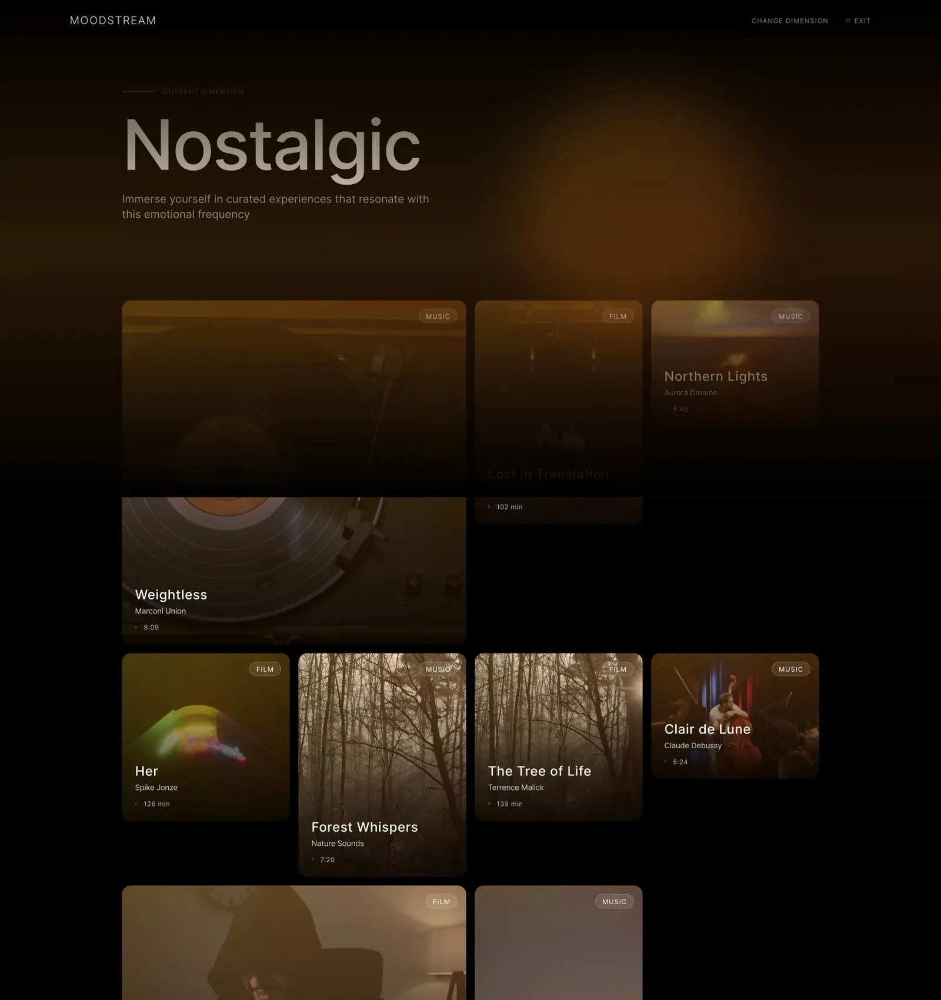
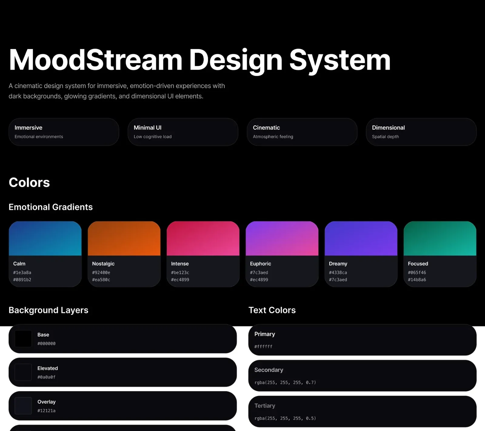
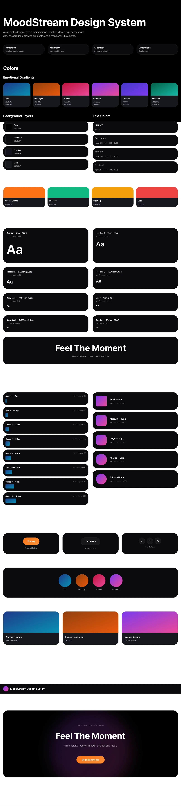

MoodStream
An experimental streaming concept that starts with how you want to feel, instead of a genre.
- Project type
- Experimental concept
- Year
- 2026
- Role
- Concept, interaction and visual design
- Scope
- Concept, prototype and design system. Not user tested.

The hypothesis01
What if mood, not genre,
became the first decision?
It started with my own behaviour: I open a streaming app, scroll through categories that don’t describe what I’m in the mood for, and close it again. That’s a personal observation, not a research finding. MoodStream is a way to explore the premise visually and see whether it holds up as an interface.
Where it started02
One page, then six moods
MoodStream began as a single home page: “Feel the moment”, an atmospheric way into music and film. Once that page worked, I extended it into six moods, each with its own landscape. Scroll to see the step from the home page to the moods.


The interaction03
Choose a dimension
Instead of a genre menu, you start by picking one of six moods: calm, nostalgic, intense, euphoric, dreamy or focused. Each one is an orb in a dark space rather than an item in a list.
Choosing one moves you into that mood’s landscape, where film and music are presented in its colour. “Shift your frequency” takes you back to choose another.

The visual system04
The system came last
Only once the six moods existed did I pull the shared parts into a design system: one dark base, a gradient per mood, and the same components in every landscape. It keeps the moods consistent without making them identical.


Motion05
Slow on purpose
Motion is part of the mood: weighted scroll and soft transitions, so the interface feels like it’s listening rather than reacting.
The open question06
“Melancholic” means something different to everyone.
Mood is subjective. A taxonomy that works across cultures and individuals would need real research and validation, and I haven’t tested MoodStream with users.
If I took it further, I’d treat mood as something you tune over time rather than pick from a menu, and I’d test that before designing more screens.